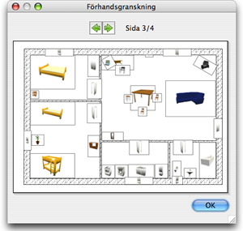

| Skriva ut ett hem | |||
För att skriva ut ett hem väljer du Arkiv > Skriv ut.... Som standard skriver Sweet Home 3D ut möbellistan, planlösningen och den aktuella 3D-vyn av hemmet, på vanlig papperstorlek, marginaler och pappersvridning.
I rutan för utskriftsinställningar kan du ändra papperstorlek och papprets vridning genom att klicka på knappen Sidformat. Du kan även välja om möbellista, planlösningen och 3D-vyn ska skrivas ut eller ej. För att förhandsgranska din utskriftsinställning på skärmen väljer du Arkiv > Förhandsgranska....  I rutan för förhandsgranskning kan du se hur ditt hem kommer skrivas ut sida för sida. För att byta sida som förhandsgranskas använder du dig av pilarna i toppen av rutan eller trycker på piltangenterna. |

|